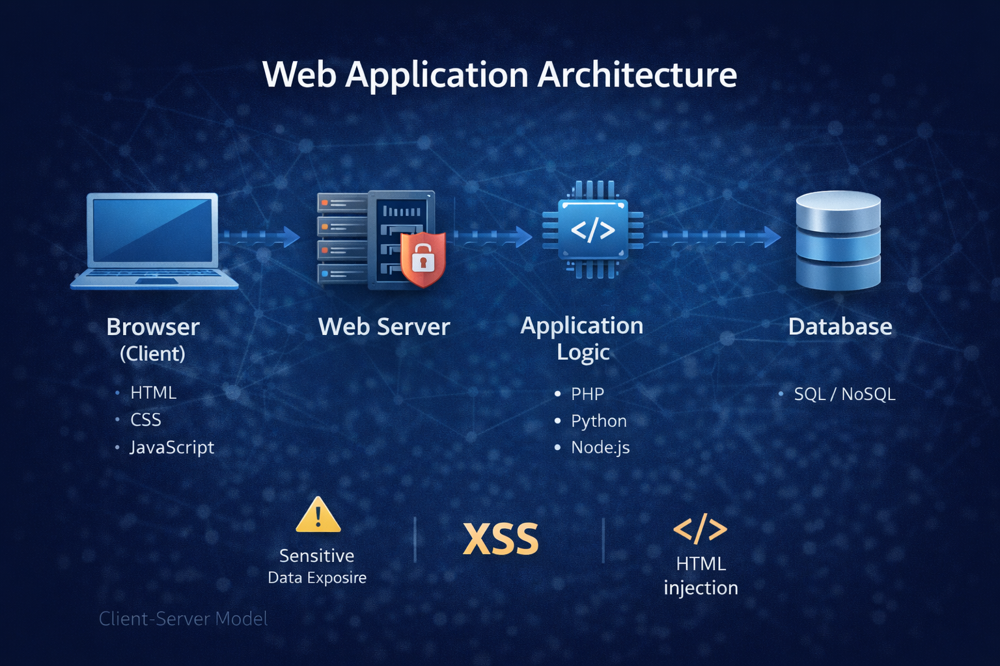
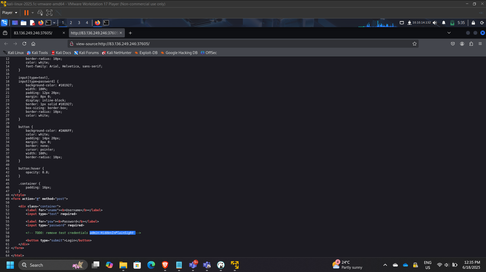
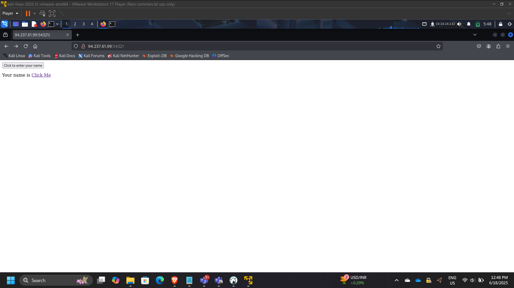
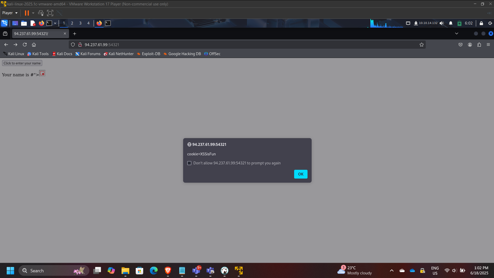
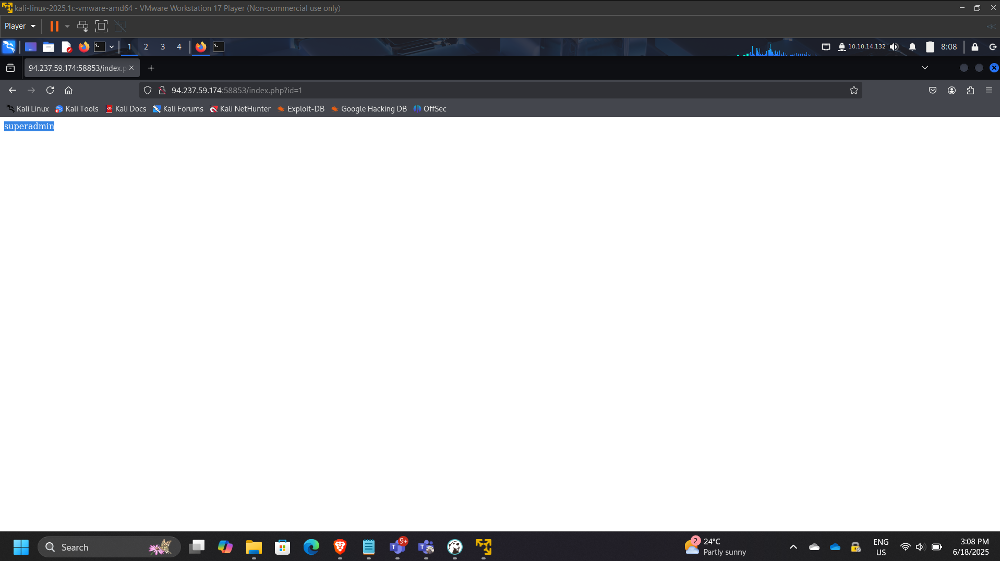
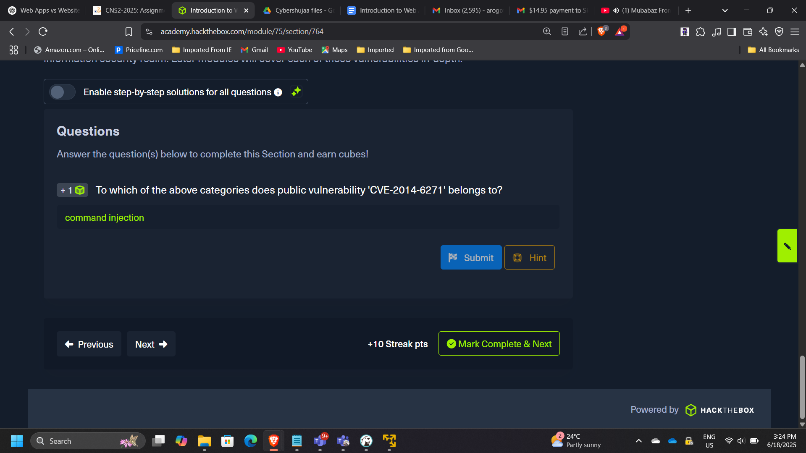
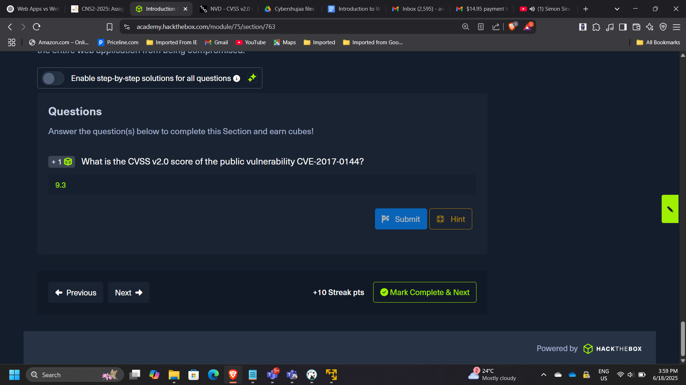

Web Application Security Fundamentals & Vulnerability Analysis
Project: Web Application Security Fundamentals & Vulnerability Analysis
Timeline: June 2025
Role: Web Application Security Analyst
Platform: HackTheBox Academy
Focus: XSS, Injection Attacks, Sensitive Data Exposure, HTTP & API Analysis
Executive Summary
Conducted foundational web application security analysis covering front-end components, HTTP behavior, input handling weaknesses, and common exploitation vectors including HTML injection, Cross-Site Scripting (XSS), and command injection.
This project demonstrates practical understanding of how insecure web applications can be exploited and how vulnerabilities are classified and mitigated.
Web Application Architecture
Web applications follow a layered client-server model:
- Browser (Client)
- Web Server
- Application Logic
- Database

Sensitive Data Exposure Analysis
Inspected login form source code to detect exposed credentials.
Identified embedded password value:
HiddenInPlainSight

Security Risk:
Exposed credentials in client-side source can lead to unauthorized access.
HTML Injection Testing
Submitted the following payload:
Observed rendered output:
Your name is Click Me

Security Impact:
Improper input sanitization allows arbitrary HTML rendering.
Cross-Site Scripting (XSS) Exploitation
Injected JavaScript payload to retrieve session cookie.
Retrieved cookie value:
XSSisFun

Security Risk:
- Session hijacking
- Credential theft
- Persistent client-side compromise
Parameter Tampering & ID Enumeration
Tested GET parameter manipulation:
/index.php?id=0
Discovered elevated user:
superadmin

Security Risk:
Broken access control due to insufficient server-side validation.
CVE & Vulnerability Research
CVE-2014-6271
Classified under:
Command Injection

CVSS Severity Assessment
CVE-2017-0144 (EternalBlue)
CVSS v2 Score: 9.3

Demonstrates ability to interpret vulnerability severity metrics.
Key Security Concepts Demonstrated
- Client-side vs server-side trust boundaries
- Input validation failures
- Output encoding importance
- HTTP status code interpretation
- CVE classification and scoring
- Web attack surface analysis
Enterprise Relevance
Modern cloud systems are heavily API-driven and web-based.
Understanding web-layer vulnerabilities directly supports:
- Secure cloud application design
- WAF rule configuration
- API gateway protection
- DevSecOps pipelines
- Zero Trust architecture
Conclusion
This project strengthened foundational knowledge of web application architecture and common vulnerability classes. By exploiting injection vectors and analyzing vulnerability severity, the lab reinforced the importance of secure coding practices and proactive security testing in modern web-based environments.